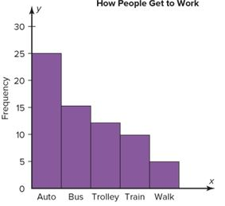

When the variable displayed on the horizontal axis is qualitative or categorical, a Pareto chart can also be used to represent the data.
Pareto Chart is used to represent a frequency distribution for a categorical variable, and the frequencies are displayed by the heights of vertical bars, which are arranged in order from highest to lowest.
Example:
